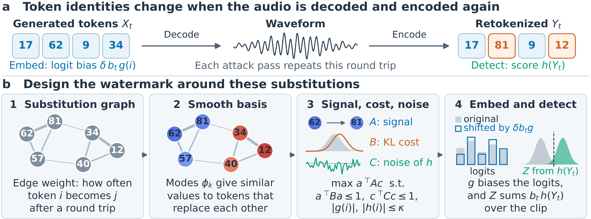

Speech language models such as Moshi generate audio as discrete codec tokens. A token-level watermark biases those tokens during generation, but decoding the tokens to a waveform and encoding it again changes some token identities, and repeated codec passes erase most of the signal. {{METHOD}} builds the watermark around these substitutions. Tokens that replace each other under retokenization define a smooth basis, and in that basis the embedding and detection functions are optimized so that the watermark survives resynthesis, within the same distortion (KL) budget as KGW. This page plays watermarked and unwatermarked speech from three models, and the same clips after repeated codec passes.
How it works

The watermark biases the codec tokens that the model samples, using a secret key and an embedding function g. The detector re-encodes the received audio with the model's codec and sums a keyed score h over the recovered tokens. Because g and h are built from the substitutions that decoding and re-encoding actually make, the score survives resynthesis through neural codecs. The speech model and the codec weights are unchanged.
How to read the samples
- Each watermarked clip sits beside its own unwatermarked clip. WMAR's unwatermarked clip comes from the same fine-tuned decoder. CRAW, a post-hoc waveform watermark, is embedded into the unwatermarked clip of the same row.
- On Moshi, every column is a separate answer to the same spoken question, because the watermark changes which tokens are sampled, so the answers differ in content. The answer's text stream is printed under each player. The TTS models read the same sentence in every column.
- Detected and Not detected are the paper's decisions for that exact clip at each method's fixed threshold. The threshold is set on unwatermarked calibration answers so that at most 1% of them exceed it, and it is never recalibrated for an attack. Token-domain methods also show their score z. Post-hoc scores are on other scales, so only the decision is shown.
- Moshi is watermarked on streams 1–4 at δ = 0.7, CosyVoice3 at δ = 0.9 and MOSS-TTS on heads 1–16 at δ = 0.9. KGW uses δ = 2 on the same streams. WMAR is shown in its FT variant; FT+Augs is in the paper.
- All audio is served as the evaluated files, 24 kHz WAV copied byte for byte with no re-encoding. The spoken prompts are the original WildVoice recordings.
Moshi
Full-duplex spoken dialogue with the Mimi codec. Each card is one test question.
{{MOSHI}}CosyVoice3
Text-to-speech. Each card is one test sentence.
{{COSYVOICE3}}MOSS-TTS Delay-8B
Text-to-speech. Each card is one test sentence.
{{MOSS}}Robustness to repeated resynthesis
Each pass decodes the waveform with a neural codec and encodes it again. The clips below are the audio the detector received, and each mark is the detector's decision on that clip.
Moshi
{{ROBUST_MOSHI}}CosyVoice3
{{ROBUST_COSYVOICE3}}MOSS-TTS Delay-8B
{{ROBUST_MOSS}}Limitations. A time shift by a fraction of a codec frame, such as 40 ms on the 12.5 Hz models Moshi and MOSS-TTS, or cropping the start of a clip, removes most of the watermark, and repeated DAC 16 kHz passes weaken it (see the paper's appendix).
How the samples were chosen
The samples were not picked by ear. For each model, eligible prompts meet all of these conditions:
- they come from the test split, first realization (r0);
- every column finished generation (status ok);
- on Moshi, the text stream is non-empty in every generated column;
- the post-hoc watermark was actually embedded (its clip differs from the carrier).
There is no length filter. The eligible prompt IDs are sorted, shuffled with seed {{SEED}} (one shuffle
per model), and the first three are shown. Each robustness table uses row 1 of its model. build.py,
selection.json and provenance.csv in the repository reproduce the page and map every clip to
its source file and score.
Prompt audio
The Moshi prompts are recordings from the WildVoice subset of VoiceBench (Chen et al., 2024,
arXiv:2410.17196;
dataset). They are released under the Apache License 2.0
and redistributed here unmodified; see NOTICE. All other audio on this page is the output of the evaluated
models.